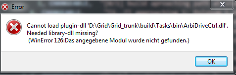

Do 07.12.2017 13:54
Debug mit CafRunner läuft nicht mehr:

Hierbei fehlt eine Dll: ucrtbased.dll, diese findet sich in: C:\Program Files (x86)\Windows Kits\10\bin\x86\ucrt
Kann dann zu den dll kopiert werden.